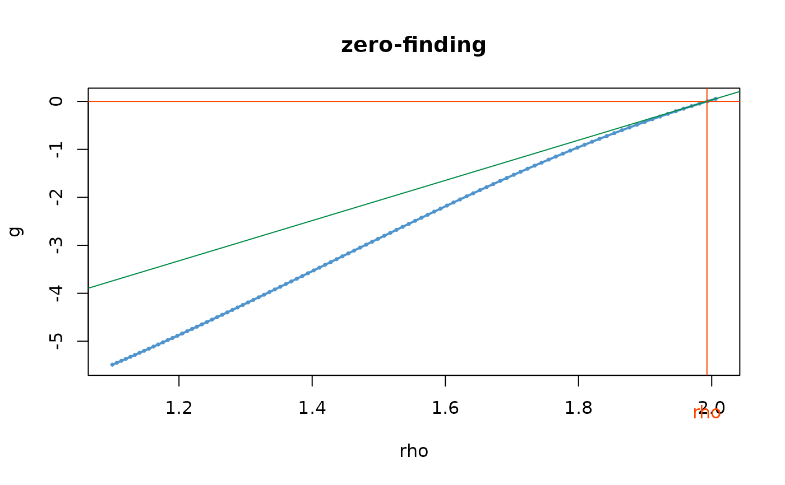

Return Levels for NSGEV and TVGEV Objects.
RL(
model,
period,
data = NULL,
date = NULL,
psi = NULL,
w = 1,
type = c("exceed", "average"),
sampleData = FALSE,
deriv = FALSE,
rhoMin = NULL,
rhoMax = NULL,
plot = FALSE
)A NSGEV or TVGEV object.
The Return period. Should be understood as an integer
multiple of the block duration w, and will be rounded else.
In some cases period must not exceed the number of rows in
data, see Details.
To be used only when model has class
"NSGEV". A data frame containing covariates for the model.
By default, the data frame attached to model is used.
To be used only when model has class
"TVGEV". A vector that can be coerced to the "Date"
class. By default, the date attached to model is
used.
Vector of coefficients. By default, the vector of coefficients of the model is used.
Numeric scalar: duration of the blocks.
The type of RL wanted, see Details.
Logical. Only used for NSGEV objects. If
TRUE, the rows of data are assumed to form a sample
of the distribution of the covariates and will be re-sampled.
Logical. If TRUE the gradient of the RL w.r.t
the model parameters is returned.
Minimal value for the evaluation of the function in
the zero-finding step when type is "exceed". This
should be used if the zero is not found with the default value,
which can be diagnosed then with plot = TRUE.
Maximal value for the evaluation of the function in
the zero-finding step when type is "exceed". This
should be used if the zero is not found with the default value,
which can be diagnosed then with plot = TRUE.
Logical. If type is "expect", a plot is
shown to check the results of the zero-finding step.
The numeric value of the Return Level.
In all cases, the GEV parameters
\(\boldsymbol{\theta}_b\) corresponding to the model
and the rows \(b\) of data are computed. When
sampleData is TRUE the rows are assumed to form a
sample of the target distribution of the GEV parameters and will
be re-sampled, so the result will change in successive calls. When
instead sampleData is FALSE, the rows of data
are considered as the values of the covariates that will be
observed in the next 'future' blocks. Then the Return period can
not be greater than the number of rows in 'data'.
When type is "average", the RL is computed
for each value of the GEV parameter and the result is simply
the mean of the computed RLs.
When type is "exceed" the RL is the value
\(\rho\) for which the number of exeedances over \(\rho\)
has unit expectation, as proposed by Parey et al. This value is
found by computing the expectation and solving a non-linear
equation in \(\rho\) with uniroot function.
For now, period can only be a numeric
vector with length 1.
Parey S., Hoang T.T.H., Dacunha-Castelle D. (2007) "Different ways to compute temperature return levels in the climate change context". Environmetrics, 21, pp. 698-718.
## =================
## NSGEV examples
## =================
example(NSGEV)
#>
#> NSGEV> df <- data.frame(t = 1:10)
#>
#> NSGEV> ## built a model with given coefficients
#> NSGEV> psi <- c("alpha" = 1, "beta" = 0.01, "delta" = 0.6, "xi" = 0.06)
#>
#> NSGEV> ns0 <- NSGEV(formulas = list("loc" = ~ alpha + beta * t, "scale" = ~ delta, "shape" = ~ xi),
#> NSGEV+ data = df, psi = psi)
#>
#> NSGEV> ## simulate a path
#> NSGEV> set.seed(1234)
#>
#> NSGEV> ysim <- simulate(ns0, nsim = 1, psi = psi)
#>
#> NSGEV> df2 <- cbind(df, y = ysim[ , 1L])
#>
#> NSGEV> ns1 <- NSGEV(formulas = list("loc" = ~ alpha + beta * t, "scale" = ~ delta, "shape" = ~ xi),
#> NSGEV+ data = df2, response = "y", psi = psi, est = "optim")
#>
#> NSGEV> ## try an exponential link
#> NSGEV> ns2 <- NSGEV(formulas = list("loc" = ~ exp(alpha + beta * t), "scale" = ~ delta, "shape" = ~ xi),
#> NSGEV+ data = df2, response = "y", psi = psi, est = "optim")
#>
#> NSGEV> ## compare the estimation with that of ismev::gev.fit
#> NSGEV> require(ismev)
#>
#> NSGEV> ns1.ismev <- gev.fit(xdat = df2$y, ydat = as.matrix(df), mul = 1, show = FALSE)
#>
#> NSGEV> rbind("NSGEV" = c(ns1$estimate, "negLogL" = ns1$negLogL),
#> NSGEV+ "ismev" = c(ns1.ismev$mle, "negLogL" = ns1.ismev$nllh))
#> alpha beta delta xi negLogL
#> NSGEV 1.143777 -0.002918431 0.6033124 -0.4359059 8.22994
#> ismev 1.143704 -0.002906355 0.6032869 -0.4358915 8.22994
#>
#> NSGEV> ## Try an expoential link
#> NSGEV> ns2.ismev <- gev.fit(xdat = df2$y, ydat = as.matrix(df), mul = 1, mulink = exp, show = FALSE)
#>
#> NSGEV> rbind("NSGEV" = c(ns2$estimate, "negLogL" = ns2$negLogL),
#> NSGEV+ "ismev" = c(ns2.ismev$mle, "negLogL" = ns2.ismev$nllh))
#> alpha beta delta xi negLogL
#> NSGEV 0.3976449 -0.11871098 1.5582157 -1.0861830 8.106294
#> ismev 0.1284920 -0.00155176 0.6035595 -0.4351343 8.230150
RL(ns1, period = 10, type = "average")
#> [1] 1.992814
RL(ns1, period = 10, type = "exceed")
#> [1] 1.992885
## with derivative
RL(ns1, period = 10, type = "average", deriv = TRUE)
#> [1] 1.992814
#> attr(,"gradient")
#> alpha beta delta xi
#> [1,] 1 5.5 1.433898 0.8167388
RL(ns1, period = 10, type = "exceed", deriv = TRUE)
#> [1] 1.992885
#> attr(,"gradient")
#> alpha beta delta xi
#> [1,] 1 5.451167 1.43378 0.8167335
## check the zero-finding step
RL(ns1, period = 10, type = "exceed", deriv = TRUE, plot = TRUE)

#> [1] 1.992885
#> attr(,"gradient")
#> alpha beta delta xi
#> [1,] 1 5.451167 1.43378 0.8167335
## =================
## TVGEV examples
## ================
example(TVGEV)
#>
#> TVGEV> ## transform a numeric year into a date
#> TVGEV> df <- within(TXMax_Dijon, Date <- as.Date(sprintf("%4d-01-01", Year)))
#>
#> TVGEV> df0 <- subset(df, !is.na(TXMax))
#>
#> TVGEV> ## fit a TVGEV model. Only the location parameter is TV.
#> TVGEV> t1 <- system.time(
#> TVGEV+ res1 <- TVGEV(data = df, response = "TXMax", date = "Date",
#> TVGEV+ design = breaksX(date = Date, breaks = "1970-01-01", degree = 1),
#> TVGEV+ loc = ~ t1 + t1_1970))
#>
#> TVGEV> ## The same using "nloptr" optimisation.
#> TVGEV> t2 <- system.time(
#> TVGEV+ res2 <- TVGEV(data = df, response = "TXMax", date = "Date",
#> TVGEV+ design = breaksX(date = Date, breaks = "1970-01-01", degree = 1),
#> TVGEV+ loc = ~ t1 + t1_1970,
#> TVGEV+ estim = "nloptr",
#> TVGEV+ parTrack = TRUE))
#>
#> TVGEV> ## use extRemes::fevd the required variables need to be added to the data frame
#> TVGEV> ## passed as 'data' argument
#> TVGEV> t0 <- system.time({
#> TVGEV+ df0.evd <- cbind(df0, breaksX(date = df0$Date, breaks = "1970-01-01",
#> TVGEV+ degree = 1));
#> TVGEV+ res0 <- fevd(x = df0.evd$TXMax, data = df0.evd, loc = ~ t1 + t1_1970)
#> TVGEV+ })
#>
#> TVGEV> ## compare estimate and negative log-liks
#> TVGEV> cbind("fevd" = res0$results$par,
#> TVGEV+ "TVGEV_optim" = res1$estimate,
#> TVGEV+ "TVGEV_nloptr" = res2$estimate)
#> fevd TVGEV_optim TVGEV_nloptr
#> mu0 32.06678895 32.06638460 32.06679233
#> mu1 -0.02391857 -0.02392656 -0.02391860
#> mu2 0.07727041 0.07728411 0.07727031
#> scale 1.75585289 1.75541862 1.75585346
#> shape -0.18130928 -0.18112018 -0.18130938
#>
#> TVGEV> cbind("fevd" = res0$results$value,
#> TVGEV+ "VGEV_optim" = res1$negLogLik,
#> TVGEV+ "TVGEV_nloptr" = res2$negLogLik)
#> fevd VGEV_optim TVGEV_nloptr
#> [1,] 177.2014 177.2014 177.2014
#>
#> TVGEV> ## ====================================================================
#> TVGEV> ## use a loop on plausible break years. The fitted models
#> TVGEV> ## are stored within a list
#> TVGEV> ## ====================================================================
#> TVGEV>
#> TVGEV> ## Not run:
#> TVGEV> ##D
#> TVGEV> ##D yearBreaks <- c(1940, 1950, 1955, 1960:2000, 2005, 2010)
#> TVGEV> ##D res <- list()
#> TVGEV> ##D
#> TVGEV> ##D for (ib in seq_along(yearBreaks)) {
#> TVGEV> ##D d <- sprintf("%4d-01-01", yearBreaks[[ib]])
#> TVGEV> ##D floc <- as.formula(sprintf("~ t1 + t1_%4d", yearBreaks[[ib]]))
#> TVGEV> ##D res[[d]] <- TVGEV(data = df, response = "TXMax", date = "Date",
#> TVGEV> ##D design = breaksX(date = Date, breaks = d, degree = 1),
#> TVGEV> ##D loc = floc)
#> TVGEV> ##D }
#> TVGEV> ##D
#> TVGEV> ##D ## [continuing...] ]find the model with maximum likelihood, and plot
#> TVGEV> ##D ## something like a profile likelihood for the break date considered
#> TVGEV> ##D ## as a new parameter. However, the model is not differentiable w.r.t.
#> TVGEV> ##D ## the break!
#> TVGEV> ##D
#> TVGEV> ##D ll <- sapply(res, logLik)
#> TVGEV> ##D plot(yearBreaks, ll, type = "o", pch = 21, col = "orangered",
#> TVGEV> ##D lwd = 2, bg = "gold", xlab = "break", ylab = "log-lik")
#> TVGEV> ##D grid()
#> TVGEV> ##D iMax <- which.max(ll)
#> TVGEV> ##D abline(v = yearBreaks[iMax])
#> TVGEV> ##D abline(h = ll[iMax] - c(0, qchisq(0.95, df = 1) /2),
#> TVGEV> ##D col = "SpringGreen3", lwd = 2)
#> TVGEV> ##D
#> TVGEV> ## End(Not run)
#> TVGEV>
#> TVGEV>
#> TVGEV>
RL(res1, period = 30)
#> [1] 37.35098
nd <- seq(from = as.Date("2000-01-01"), to = as.Date("2300-01-01"),
by = "year")
RLe <- RL(res1, period = 200, date = nd, plot = TRUE)
RLa <- RL(res1, period = 200, date = nd, plot = TRUE, type = "average")
## check the value of 'RLA'
q <- quantile(res2, prob = 1.0 - 1.0 / 200, date = nd)
autoplot(q)
mean(q[1:200])
#> [1] 44.95267